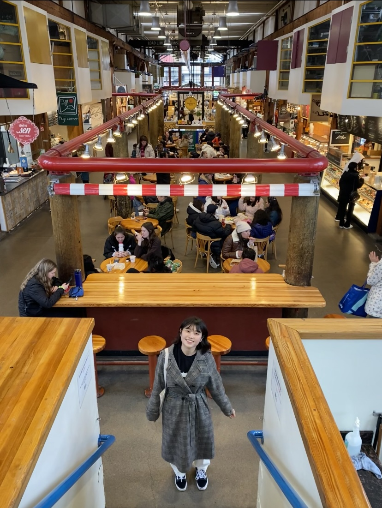
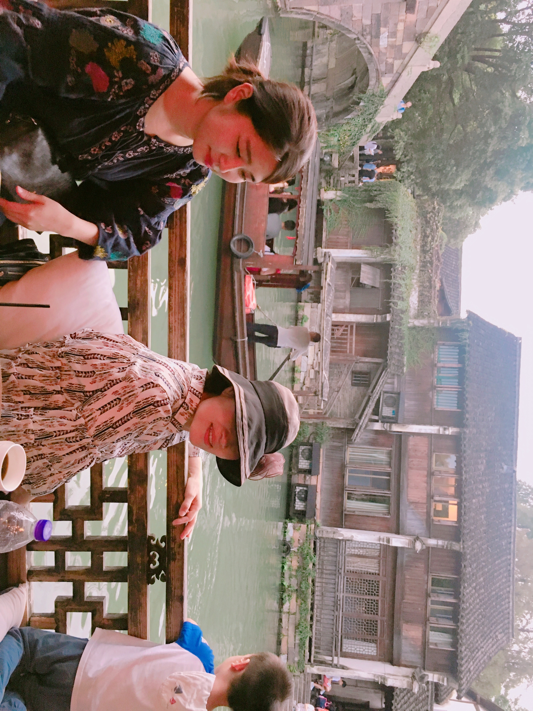

Biography
I am a PhD Candidate in Economics at the University of Washington, on the 2025-26 job market!
My research interest is applied microeconomics and development economics with a special focus on gender and climate change.
My job market paper studies the unintended consequences of maternal health programs in rural India, specifically how cash incentives and health worker access influence fertility decisions and pregnancy outcomes.
Interests
- Applied Microeconomics
- Health Economics
- Development Economics
Education
Research
Scheduled presentations: ASSA 2026, SEA 2025
Under Review | Scheduled presentations: ASSA 2026, SEA 2025
This paper examines how Indonesian farmers respond to extreme temperature and rainfall shocks. Both shocks reduce household expenditure and lead to asset depletion. Low rainfall increases agricultural work and reduces non-agricultural work, especially among rice-farming men, while temperature shocks have smaller labor effects. The results suggest that households can better adapt to rainfall variability than to rising temperatures.
Scheduled presentations: APPAM 2025
We examine how adolescent exposure to armed conflict influences marriage timing in Northern Nigeria. Using survey data from married girls aged 16–22 in Kaduna State and geocoded conflict events, we find that girls exposed to violence near typical marriage ages are more likely to marry early and have less schooling. Conflict exposure also increases early fertility and the likelihood of polygynous unions, underscoring how localized violence can alter life-cycle decisions.
Teaching Experience
Instructor of Record - University of Washington Bothell
Course: B-BUS 220 Introduction to Microeconomics
Terms: Winter 2025, Spring 2025, Fall 2025
Instructor Rating: 4.3/5
Instructor of Record - University of Washington
Course: ECON 201 Introduction to Macroeconomics
Term: Winter 2022
Instructor Rating: 4.7/5
Instructor of Record - University of Washington
Course: ECON 200 Introduction to Microeconomics
Terms: Summer 2022, Fall 2022, Winter 2023, Fall 2024
Instructor Rating: 3.9/5
Teaching Assistant - University of Washington
Course: ECON 602 Teaching Introductory Economics
Term: Fall 2024
Teaching Assistant - University of Washington
Course: ECON 200 Introduction to Microeconomics
Terms: Winter 2021 – Fall 2023, Spring 2024
Instructor Rating: 4.5/5
Interest
Outside of research, I enjoy traveling and exploring new cultures around the world!


